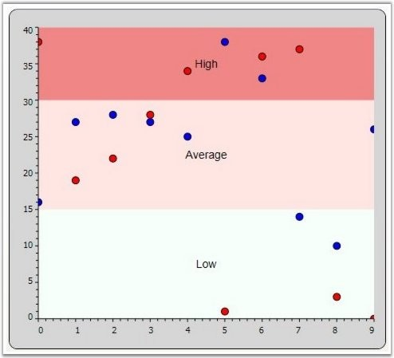
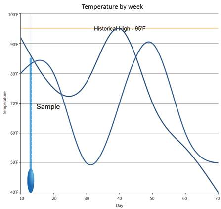
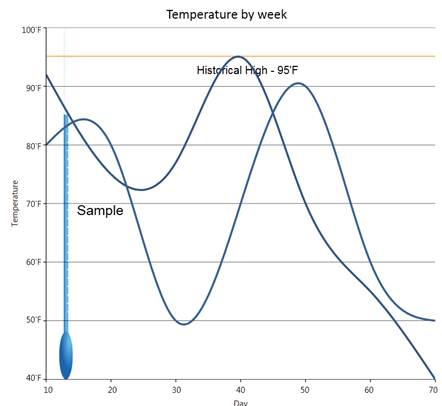

Chart for WPF enables the user to highlight a specific area of the chart by adding StripLines to a ChartAxis. The strip lines length and width can be customized, a text label can be specified and the look and feel can be customized too.
Start, Frequency and Width of the line
The following properties let you customize the start, frequency and width of the lines.
Table 128: ChartStripLine Properties
|
ChartStripLine Properties |
Description |
|
StartFromAxis |
A bool property used to specify whether the stripline starts from the beginning of the axis. |
|
Offset |
If StartFromAxis is true, this property lets you add an Offset to that starting location. |
|
Start |
If StartFromAxis is false, this property specifies where exactly the stripline should start. |
|
Width |
This double property lets you specify the width of each (optionally repeating) strip line. |
|
RepeatEvery |
Specifies how often this stripline should repeat or the frequency. |
|
RepeatUntil |
A double property that specifies until where the striplines should repeat. |
Appearance
Table 129: Properties
|
Properties |
Description |
|
Interior |
A brush property used to specify the color to be filled in the stripline area. |
|
Stroke |
A Pen type used to specify the border style around the strip area. |
Text Label
Table 130: Text Label
|
Properties |
Description |
|
Text |
A FormattedText property that lets you specify the text and appearance of the label for this strip line. |
|
TextAlignment |
Lets you specify how this text label should be aligned. |
|
VerticalText |
Boolean property specifying if the text should be rendered vertically. |
|
TextBackground |
A Brush for the text background. |
Sample code
|
[XAML]
<sfchart:Chart> <sfchart:ChartArea Background="LightGray" GridBackground="White"> <sfchart:ChartArea.PrimaryAxis> <sfchart:ChartAxis sfchart:ChartArea.ShowGridLines="False"> </sfchart:ChartAxis> </sfchart:ChartArea.PrimaryAxis> <sfchart:ChartArea.SecondaryAxis> <sfchart:ChartAxis sfchart:ChartArea.ShowGridLines="False"> <sfchart:ChartAxis.StripLines> <sfchart:ChartStripLine x:Name="strip1" Interior="MintCream" Offset="0" StartFromAxis="True" Width="15"> </sfchart:ChartStripLine> <sfchart:ChartStripLine x:Name="strip2" Interior="MistyRose" Offset="15" StartFromAxis="True" Width="15"> </sfchart:ChartStripLine> <sfchart:ChartStripLine x:Name="strip3" Interior="LightCoral" Offset="30" StartFromAxis="True" Width="10"> </sfchart:ChartStripLine> </sfchart:ChartAxis.StripLines> </sfchart:ChartAxis> </sfchart:ChartArea.SecondaryAxis> <sfchart:ChartSeries Name="Series1" Interior="Red" Type="Scatter" DataSource="{Binding Source = {StatisResource myXmlData}, XPath=Products/Product}" BindingPathX="X" BindingPathsY="Series1Y"/>
<sfchart:ChartSeries Name="Series2" Interior="Blue" Type="Scatter" DataSource="{Binding Source = {StatisResource myXmlData}, XPath=Products/Product}" BindingPathX="X" BindingPathsY="Series1Y1"/>
</sfchart:ChartArea> </sfchart:Chart> |
To set the labels for the striplines, use the following code snippet.
|
[C#]
strip1.Text = new FormattedText("Low", CultureInfo.CurrentCulture, FlowDirection.LeftToRight, new Typeface("Times New Roman"), 20, Brushes.Black); strip2.Text = new FormattedText("Average", CultureInfo.CurrentCulture, FlowDirection.LeftToRight, new Typeface("Times New Roman"), 20, Brushes.Black); strip3.Text = new FormattedText("High", CultureInfo.CurrentCulture, FlowDirection.LeftToRight, new Typeface("Times New Roman"), 20, Brushes.Black); |

Figure 183: Chart with Custom Stripline Areas
See Also
ChartAxis Lines, ChartAxis GridLines, ChartAxis OriginLines, Chart StripLines
Essential Chart for WPF now supports customizing the position of strip line text. Users can set the strip line text using the TextOffsetX and TextOffsetY properties.
Property Details
Table 131: Property
|
Name of Property |
Description |
Type of Property
|
Value It Accepts
|
Property Syntax |
|
TextOffsetX |
Sets the horizontal position of strip line text. |
Dependency |
double |
csY.TextOffsetX = 10; |
|
TextOffsetY |
Sets the vertical position of strip line text. |
Dependency |
double |
csY.TextOffsetY = 20; |
Setting the Position of Strip Line Text
The following code is used to set the position of strip line text.
|
[C#]
ChartStripLine csY = new ChartStripLine(); //Set the stripline text csY.Text = new FormattedText("Historical High - 95'F", CultureInfo.CurrentCulture, FlowDirection.LeftToRight, new Typeface("Arial"), 10, Brushes.Black);
//Set the stripline position csY.TextOffsetX = 10; csY.TextOffsetY = 20; |
Before setting the offset:

Figure 184: Strip Line Text on the Strip Line
After setting the offset:

Figure 185: Stripline Text Aligned